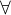
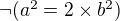
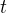
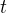
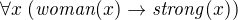
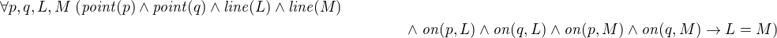

Logic and Proof
7 First Order Logic
Propositional logic provides a good start at describing the general principles of logical reasoning, but it does not go far enough. Some of the limitations are apparent even in the "Malice and Alice" example from Chapter 2. Propositional logic does not give us the means to express a general principle that tells us that if Alice is with her son on the beach, then her son is with Alice; the general fact that no child is younger than his or her parent; or the general fact that if someone is alone, they are not with someone else. To express principles like these, we need a way to talk about objects and individuals, as well as their properties and the relationships between them. These are exactly what is provided by a more expressive logical framework known as first-order logic, which will be the topic of the next few chapters.
7.1 Functions, Predicates, and Relations
Consider some ordinary statements about the natural numbers:
- Every natural number is even or odd, but not both.
- A natural number is even if and only if it is divisible by two.
- If some natural number,
 , is even, then so is .
, is even, then so is . - A natural number is even if and only if is odd.
- Any prime number that is greater than 2 is odd.
- For any three natural numbers ,
 , and
, and  , if divides
and divides , then divides .
, if divides
and divides , then divides .
These statements are true, but we generally do not think of them as logically valid: they depend on assumptions about the natural numbers, the meaning of the terms "even" and "odd," and so on. But once we accept the first statement, for example, it seems to be a logical consequence that the number of stairs in the White House is either even or odd, and, in particular, if it is not even, it is odd. To make sense of inferences like these, we need a logical system that can deal with objects, their properties, and relations between them.
Rather than fix a single language once and for all, first-order logic allows us to specify the symbols we wish to use for any given domain of interest. In this section, we will use the following running example:
- the domain of interest is the natural numbers,
 .
. - there are objects, ,
 ,
,  ,
,  , ….
, …. - there are functions, addition and multiplication, as well as the square function, on this domain.
- there are predicates on this domain, "even," "odd," and "prime."
- there are relations between elements of this domain, "equal," "less than", and "divides."
For our logical language, we will choose symbols 1, 2, 3,
 ,
,  , ,
, ,  ,
,  , ,
, and so on, to denote these things. We will also have
variables , , and ranging over the natural numbers. Note all
of the following.
, ,
, and so on, to denote these things. We will also have
variables , , and ranging over the natural numbers. Note all
of the following.
- Functions can take any number of arguments: if and are
natural numbers, it makes sense to write and
. so takes two arguments, and
takes only one.
- Predicates and relations can also be understood in these terms. The
predicates and take one argument,
while the binary relations and
 take two arguments.
take two arguments. - Functions are different from predicates! A function takes one or more arguments, and returns a value. A predicate takes one or more arguments, and is either true or false. We can think of predicates as returning propositions, rather than values.
- In fact, we can think of the constant symbols as special sorts of function symbols that take zero arguments. Analogously, we can consider the predicates that take zero arguments to be the constant logical values, and .
- In ordinary mathematics, we often use "infix" notation for binary functions and relations. For example, we usually write or instead of , and we write instead of . We will use these conventions when writing proofs in natural deduction, and they are supported in Lean as well.
- We will treat the equality relation,
 , as a special binary
relation that is included in every first-order language.
, as a special binary
relation that is included in every first-order language.
First-order logic allows us to build complex expressions out of the basic ones. Starting with the variables and constants, we can use the function symbols to build up compound expressions like these:
Such expressions are called "terms." Intuitively, they name objects in the intended domain of discourse.
Now, using the predicates and relation symbols, we can make assertions about these expressions:
Even more interestingly, we can use propositional connectives to build compound expressions like these:
The second one, for example, asserts that either is not
equal to  , or
, or  is less than . Remember, these are
expressions in symbolic logic; in ordinary mathematics, we would
express the notions using words like "is even" and "if and only if,"
as we did above. We will use notation like this whenever we are in the
realm of symbolic logic, for example, when we write proofs in natural
deduction. Expressions like these are called formulas. In contrast
to terms, which name things, formulas say things; in other words, they
make assertions about objects in the domain of discourse.
is less than . Remember, these are
expressions in symbolic logic; in ordinary mathematics, we would
express the notions using words like "is even" and "if and only if,"
as we did above. We will use notation like this whenever we are in the
realm of symbolic logic, for example, when we write proofs in natural
deduction. Expressions like these are called formulas. In contrast
to terms, which name things, formulas say things; in other words, they
make assertions about objects in the domain of discourse.
7.2 The Universal Quantifier
What makes first-order logic powerful is that it allows us to make
general assertions using quantifiers. The universal quantifier
 followed by a variable is meant to represent the phrase
"for every ." In other words, it asserts that every value of
has the property that follows it. Using the universal quantifier, the
examples with which we began this previous section can be expressed as
follows:
It is common to combine multiple quantifiers of the same kind, and write, for example, in the last expression.
Here are some notes on syntax:
- In symbolic logic, the universal quantifier is usually taken to bind
tightly. For example, is interpreted as , and we would write
 to extend the scope.
to extend the scope. - Be careful, however. In other contexts, especially in computer
science, people often give quantifiers the widest scope
possible. This is the case with Lean. For example,
∀ x, P ∨ Qis interpreted as∀ x, (P ∨ Q), and we would write(∀ x, P) ∨ Qto limit the scope. - After the quantifier , the variable is bound. For
example, the expression
 is
expresses that every number is even or odd. Notice that the variable
does not appear anywhere in the informal statement. The
statement is not about at all; rather is a dummy variable, a
placeholder that stands for the "thing" referred to within a phrase
that beings with the words "every thing." We think of the expression
as being the same as the
expression . Lean treats
these expressions as the same as well.
is
expresses that every number is even or odd. Notice that the variable
does not appear anywhere in the informal statement. The
statement is not about at all; rather is a dummy variable, a
placeholder that stands for the "thing" referred to within a phrase
that beings with the words "every thing." We think of the expression
as being the same as the
expression . Lean treats
these expressions as the same as well. - In Lean, the expression
∀ x y z, x ∣ y → y ∣ z → x ∣ zis interpreted as∀ x y z, x ∣ y → (y ∣ z → x ∣ z), with parentheses associated to the right. The part of the expression after the universal quantifier can therefore be interpreted as saying "given thatxdividesyand thatydividesz,xdividesz." The expression is logically equivalent to∀ x y z, x ∣ y ∧ y ∣ z → x ∣ z, but we will see that, in Lean, it is often convenient to express facts like this as an iterated implication.
A variable that is not bound is called free. Notice that formulas in
first-order logic say things about their free variables. For example,
in the interpretation we have in mind, the formula
says that is less than or equal to every natural number. The
formula says exactly the same thing; we can always
rename a bound variable, as long as we pick a name that does not clash
with another name that is already in use. On the other hand, the
formula says that is less than or equal to every
natural number. This is an entirely different statement: it says
something about , rather than . So renaming a free variable
changes the meaning of a formula.
Notice also that some formulas, like , have no free variables at all. Such a formula is called a sentence, because it makes an outright assertion, a statement that is either true or false about the intended interpretation. In Chapter 10 we will make the notion of an "intended interpretation" precise, and explain what it means to be "true in an interpretation." For now, the idea that formulas say things about about object in an intended interpretation should motivate the rules for reasoning with such expressions.
In Chapter 1 we proved that the square root of two is irrational. One way to construe the statement is as follows:
For every pair of natural numbers,
and
, it is not the case that
.
The advantage of this formulation is that we can restrict our attention to the natural numbers, without having to consider the larger domain of rationals. In symbolic logic, assuming our intended domain of discourse is the natural numbers, we would express this theorem using the universal quantifier:
How do we prove such a theorem? Informally, we would use such a pattern:
Let
…
Contradiction.
What we are really doing is proving that the universal statement
holds, by showing that it holds of "arbitrary" values and . In
natural deduction, the proof would look something like this:
Notice that after the hypothesis is canceled, we have proved  without making any assumptions about and
; at this stage in the proof, they are "arbitrary," justifying the
application of the universal quantifiers in the next two rules.
This example motivates the following rule in natural deduction:
provided is not free in any uncanceled hypothesis. Here  stands for any formula that (potentially) mentions . Also remember
that if is any "fresh" variable that does not occur in
stands for any formula that (potentially) mentions . Also remember
that if is any "fresh" variable that does not occur in  , we are
thinking of
, we are
thinking of  as being the same as .
as being the same as .
What about the elimination rule? Suppose we know that every number is
even or odd. Then, in an ordinary proof, we are free to assert " is
even or is odd," or " is even or is odd." In terms of
symbolic logic, this amounts to the following inference: from , we can conclude for any term . This motivates the elimination rule for
the universal quantifier:
is even or is odd." In terms of
symbolic logic, this amounts to the following inference: from , we can conclude for any term . This motivates the elimination rule for
the universal quantifier:
where is an arbitrary term.
In a sense, this feels like the elimination rule for implication; we
might read the hypothesis as saying "if is any thing, then is
even or odd." The conclusion is obtained by applying it to the fact
that  is a thing. Note that, in general, we could replace by
any term in the language, like . Similarly, the
introduction rule feels like the introduction rule for implication. If
we want to show that everything has a certain property, we temporarily
let denote an arbitrary thing, and then show that it has the
relevant property.
is a thing. Note that, in general, we could replace by
any term in the language, like . Similarly, the
introduction rule feels like the introduction rule for implication. If
we want to show that everything has a certain property, we temporarily
let denote an arbitrary thing, and then show that it has the
relevant property.
7.3 The Existential Quantifier
Dual to the universal quantifier is the existential quantifier, , which is used to express assertions such as "some number is even," or, "between any two even numbers there is an odd number."
The following statements about the natural numbers assert the existence of some natural number:
- There exists an odd composite number. (Remember that a natural number is composite if it is greater than 1 and not prime.)
- Every natural number greater than one has a prime divisor.
- For every , if has a prime divisor smaller than , then
is composite.
These statements can be expressed in first-order logic using the existential quantifier as follows:

After we write , the variable is bound in the
formula, just as for the universal quantifier. So the formulas and are considered the
same.
How do we prove such existential statements? Suppose we want to prove that there exists an odd composite number. To do this, we just present a candidate, and show that the candidate satisfies the required properties. For example, we could choose 15, and then show that 15 is odd and that 15 is prime. Of course, there's nothing special about 15, and we could have proven it also using a different number, like 9 or 35. The choice of candidate does not matter, as long as it has the required property.
In a natural deduction proof this would look like this:

This illustrates the introduction rule for the existential quantifier:
where is any term. So to prove an existential formula, we just have to give one particular term for which we can prove that formula. Such term is called a witness for the formula.
What about the elimination rule? Suppose that we know that is some
natural number and we know that there exists a prime  such that and
such that and  . How can we use this to prove that is
composite? We can reason as follows:
. How can we use this to prove that is
composite? We can reason as follows:
Let
and
…
Therefore,
First, we assume that there is some which satisfies the properties
is prime, and , and then we reason about that
. As with case-based reasoning using "or," the assumption is only
temporary: if we can show that is composite from that assumption,
that we have essentially shown that is composite assuming the
existence of such a . Notice that in this pattern of reasoning,
should be "arbitrary." In other words, we should not have assumed
anything about beforehand, we should not make any additional
assumptions about along the way, and the conclusion should not
mention . Only then does it makes sense to say that the conclusion
follows from the "mere" existence of a with the assumed
properties.
In natural deduction, the elimination rule is expressed as follows:
Here we require that is not free in  , and that the only
uncanceled hypotheses where occurs freely are the hypotheses
, and that the only
uncanceled hypotheses where occurs freely are the hypotheses
 that are canceled when you apply this rule. Formally, this is
what it means to say that is "arbitrary." As was the case for or
elimination and implication introduction, you can use the hypothesis
multiple times in the proof of , and cancel all of them at
once.
that are canceled when you apply this rule. Formally, this is
what it means to say that is "arbitrary." As was the case for or
elimination and implication introduction, you can use the hypothesis
multiple times in the proof of , and cancel all of them at
once.
Intuitively, the rule says that you can prove from the assumption
by assuming for a fresh variable , and
concluding, in any number of steps, that follows. You should
compare this rule to the rule for or elimination, which is somewhat
analogous. In the following example, we show that if always
implies , then there cannot be an for which both
and  holds.
holds.
7.4 Relativization and Sorts
In first-order logic as we have presented it, there is one intended
"universe" of objects of discourse, and the universal and existential
quantifiers range over that universe. For example, we could design a
language to talk about people living in a certain town, with a
relation to express that loves . In such a
language, we might express the statement that "everyone loves someone"
by writing .
You should keep in mind that, at this stage, is just a
symbol. We have designed the language with a certain interpretation in
mind, but one could also interpret the language as making statements
about the natural numbers, where means that is
less than or equal to . In that interpretation, the sentence
is true, though in the original interpretation it makes an implausible claim about the nature of love triangles. In Chapter 10, we will spell out the notion that the deductive rules of first-order logic enable us to determine the statements that are true in all interpretations, just as the rules of propositional logic enable us to determine the statements that are true under all truth assignments.
Returning to the original example, suppose we want to represent the statement that, in our town, all the women are strong and all the men are good looking. We could do that with the following two sentences:
- 
These are instances of relativization. The universal quantifier ranges over all the people in the town, but this device gives us a way of using implication to restrict the scope of our statements to men and women, respectively. The trick also comes into play when we render "every prime number greater than two is odd":
We could also read this more literally as saying "for every number
, if is prime and is greater than or equal to 2, then
is odd," but it is natural to read it as a restricted quantifier.
It is also possible to relativize the existential quantifier to say things like "some woman is strong" and "some man is good-looking." These are expressed as follows:
Notice that although we used implication to relativize the universal quantifier, here we need to use conjunction instead of implication. The expression says that there is something with the property that if it is a woman, then it is strong. Classically this is equivalent to saying that there is something which is either not a woman or is strong, which is a funny thing to say.
Now, suppose we are studying geometry, and we want to express the fact
that given any two distinct points and  and any two lines
and any two lines  and , if and both pass through and , then they have
to be the same. (In other words, there is at most one line between two
distinct points.) One option is to design a first-order logic where the
intended universe is big enough to include both points and lines, and
use relativization:
and , if and both pass through and , then they have
to be the same. (In other words, there is at most one line between two
distinct points.) One option is to design a first-order logic where the
intended universe is big enough to include both points and lines, and
use relativization:

But dealing with such predicates is tedious, and there is a mild
extension of first-order logic, called many-sorted first-order
logic, which builds in some of the bookkeeping. In many-sorted logic,
one can have different sorts of objects — such as points and lines
— and a separate stock of variables and quantifiers ranging over
each. Moreover, the specification of function symbols and predicate
symbols indicates what sorts of arguments they expect, and, in the
case of function symbols, what sort of argument they return. For
example, we might choose to have a sort with variables  ranging over points, a sort with variables
ranging over lines, and a relation relating the
two. Then the assertion above is rendered more simply as follows:
ranging over points, a sort with variables
ranging over lines, and a relation relating the
two. Then the assertion above is rendered more simply as follows:
7.5 Equality
In symbolic logic, we use the expression to express the fact
that  and are "equal" or "identical." The equality symbol is
meant to model what we mean when we say, for example, "Alice's brother
is the victim," or "2 + 2 = 4." We are asserting that two different
descriptions refer to the same object. Because the notion of identity
can be applied to virtually any domain of objects, it is viewed as
falling under the province of logic.
and are "equal" or "identical." The equality symbol is
meant to model what we mean when we say, for example, "Alice's brother
is the victim," or "2 + 2 = 4." We are asserting that two different
descriptions refer to the same object. Because the notion of identity
can be applied to virtually any domain of objects, it is viewed as
falling under the province of logic.
Talk of "equality" or "identity" raises messy philosophical questions, however. Am I the same person I was three days ago? Are the two copies of Huckleberry Finn sitting on my shelf the same book, or two different books? Using symbolic logic to model identity presupposes that we have in mind a certain way of carving up and interpreting the world. We assume that our terms refer to distinct entities, and writing asserts that the two expressions refer to the same thing. Axiomatically, we assume that equality satisfies the following three properties:
- reflexivity: , for any term
- symmetry: if , then
- transitivity: if and , then .
These properties are not enough to characterize equality, however. If
two expressions denote the same thing, then we should be able to
subtitute one for any other in any expression. It is convenient to
adopt the following convention: if  is any term, we may write
is any term, we may write
 to indicate that the variable may occur in . Then, if
is another term, we can thereafter write to denote the
result of replacing for in . The substition rule for terms
thus reads as follows: if , then .
to indicate that the variable may occur in . Then, if
is another term, we can thereafter write to denote the
result of replacing for in . The substition rule for terms
thus reads as follows: if , then .
We already adopted a similiar convention for formulas: if we introduce
a formula as , then denotes the result of substituting
for in . With this in mind, we can write the rules for
equality as follows:

In the next chapter, you will learn how to use them.
Using equality, we can define even more quantifiers.
- We can express "there are at least two elements such that
holds" as .
- We can express "there are at most two elements such that
holds" as . This states that if we have three elements
for which holds, then two of them must be equal.
- We can express "there are exactly two elements such that
holds" as the conjunction of the above two statements.
As an exercise, write out in first order logic the statements that
there are at least, at most, and exactly three elements such that
holds.
In logic, the expression  is used to express the
fact that there is a unique satisfying , which is to say,
there is exactly one such . As above, this can be expressed as
follows:
is used to express the
fact that there is a unique satisfying , which is to say,
there is exactly one such . As above, this can be expressed as
follows:
The first conjunct says that there is at least one object satisfying
, and the second conjunct says that there is at most one. The same
thing can be expressed more concisely as follows:
You should think about why this second expression works. In the next chapter we will see that, using the rules of natural deduction, we can prove that these two expressions are equivalent.
7.6 Exercises
A perfect number is a number that is equal to the sum of its proper divisors, that is, the numbers that divide it, other than itself. For example, 6 is perfect, because .
Using a language with variables ranging over the natural numbers and suitable functions and predicates, write down first-order sentences asserting the following. Use a predicate to express that a number is perfect.
- 28 is perfect.
- There are no perfect numbers between 100 and 200.
- There are (at least) two perfect numbers between 200 and 10,000.
(Express this by saying that there are perfect numbers and
between 200 and 10,000, with the property that .)
- Every perfect number is even.
- For every number, there is a perfect number that is larger than it. (This is one way to express the statement that there are infinitely many perfect numbers.)
Here, the phrase ``between
and '' is meant to include
and .
By the way, we do not know whether the last two statements are true. They are open questions.
Using a language with variables ranging over people, and predicates , , , and , and , write down first-order sentences asserting the following:
- Nobody trusts a politician.
- Anyone who trusts a politician is crazy.
- Everyone knows someone who is related to a politician.
- Everyone who is rich is either a politician or knows a politician.
In each case, some interpretation may be involved. Notice that writing down a logical expression is one way of helping to clarify the meaning.